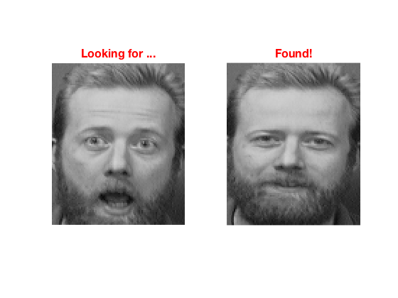

Code for face recognition
Modified as per need by Pushkar Kadam Date: 06/08/2017
Contents
Face recognition
This algorithm uses the eigenface system (based on pricipal component analysis - PCA) to recognize faces. For more information on this method refer to http://cnx.org/content/m12531/latest/
Download the face database
You can find the database at the follwoing link, http://www.cl.cam.ac.uk/research/dtg/attarchive/facedatabase.html The database contains 400 pictures of 40 subjects. Download the zipped database and unzip it in the same directory as this file.
Loading the database into matrix v
w=load_database();
Initializations
We randomly pick an image from our database and use the rest of the images for training. Training is done on 399 pictues. We later use the randomly selectted picture to test the algorithm.
ri=round(400*rand(1,1)); % Randomly pick an index. r=w(:,ri); % r contains the image we later on will use to test the algorithm v=w(:,[1:ri-1 ri+1:end]); % v contains the rest of the 399 images. N=20; % Number of signatures used for each image.
Subtracting the mean from v
O=uint8(ones(1,size(v,2))); m=uint8(mean(v,2)); % m is the maen of all images. vzm=v-uint8(single(m)*single(O)); % vzm is v with the mean removed.
Calculating eignevectors of the correlation matrix
We are picking N of the 400 eigenfaces.
L=single(vzm)'*single(vzm);
[V,D]=eig(L);
V=single(vzm)*V;
V=V(:,end:-1:end-(N-1)); % Pick the eignevectors corresponding to the 10 largest eigenvalues.
Calculating the signature for each image
cv=zeros(size(v,2),N); for i=1:size(v,2); cv(i,:)=single(vzm(:,i))'*V; % Each row in cv is the signature for one image. end
Recognition
Now, we run the algorithm and see if we can correctly recognize the face.
subplot(121); imshow(reshape(r,112,92)); title('Looking for ...','FontWeight','bold','Fontsize',16,'color','red'); subplot(122); p=r-m; % Subtract the mean s=single(p)'*V; z=[]; for i=1:size(v,2) z=[z,norm(cv(i,:)-s,2)]; if(rem(i,20)==0),imshow(reshape(v(:,i),112,92)),end; drawnow; end [a,i]=min(z); subplot(122); imshow(reshape(v(:,i),112,92));title('Found!','FontWeight','bold','Fontsize',16,'color','red');